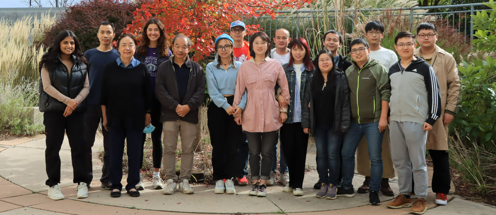
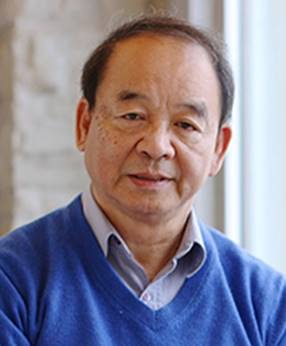
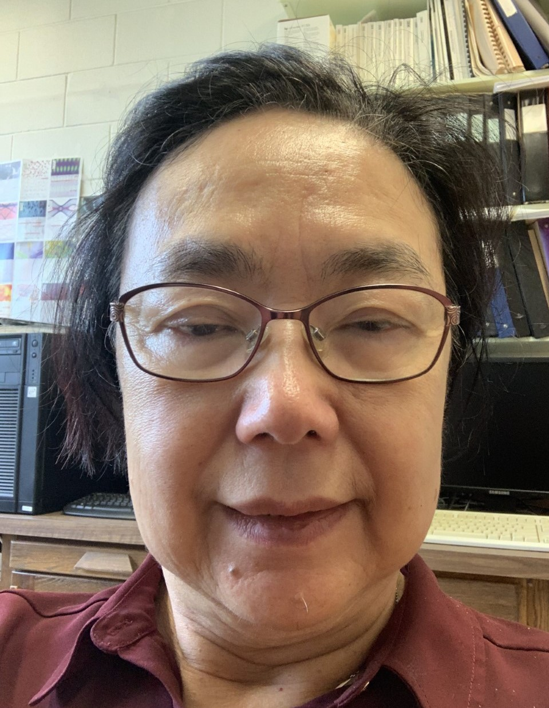
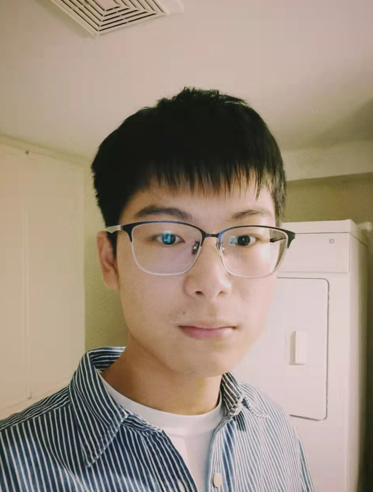
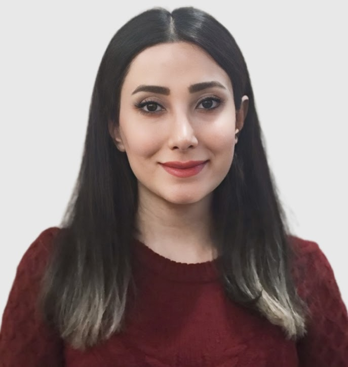

Welcome to the Sham Group!

Principal Investigator

Dr. Tsun-Kong Sham
Distinguished University Professor
Canada Research Chair
Ph.D. University of Western Ontario
B.Sc. Chinese University of Hong Kong
E-mail: tsham@uwo.ca
Post-docs and Research Associates

Dr. Yun-Mui Yiu
Ph.D. University of Maryland
E-mail: yyiu@uwo.ca

Jiabin Xu
Ph.D. Western University
E-mail: jxu762@uwo.ca
Graduate Students

Yi Yuan
Ph.D. Student
(co-supervised by Prof. Yang Zhao)
B.Sc. Western University
M.Sc. Western University
E-mail: yyuan448@uwo.ca

Mahtab Mohsenirad
Ph.D. Student
(co-supervised by Prof. Yolanda Hedberg)
Former and Current Members
HQP coming through T.K. Sham's lab: graduate students, postdoctoral fellows, research associate and visiting scholars at Western
HQP |
Training @ UWO Since 1988 |
Present Position |
Bingxin Yang |
1988-1991 CSRF Staff (PhD, SUNY Stony Brook, BNL) |
Accelerator Physicist, Advanced Photon Source, Argonne National Laboratory, Chicago |
Mark Kuhn |
1989-2003 PhD (Chem) |
Senior Engineer, Intel (Oregon), a co-inventor of new dielectric gated oxide |
R. Sammynaiken |
1989-1991 PhD candidate (transferred. to U. New Brunswick); 1999-2000 RA (UWO) |
Manager, Saskatchewan Structure Science Centre, & U. Saskatchewan |
Z.H. Lu |
1989-2001 PDF (PhD, U. Montreal) |
Professor, CRC Tier I (2010-2017), Materials, U. Toronto |
Arthur Bzowski |
1989-1995 BS & PhD (Chem) |
Self-employed, CEO |
Jianzhang Xiong |
1991-1996 PhD (Chem) |
Federal Government (Ottawa) |
Detong Jiang |
1991-1994 NSERC PDF (Ph.D, Physics, Simon Fraser U.) |
Associate Professor, Condensed Matter Physics, U. Guelph |
Takashi Murata |
1994 NSERC Visiting Scholar (Kyoto University of Education) |
President of the Kyoto University of Education (ret.) |
Ian Coulthard |
1992-1998 BS & PhD (Chem) |
Senior Staff Scientist, Canadian Light Source, beamline development |
Steve Naftel |
1991-1999 PhD (Chem) Graduate Study in Physical Anthropology, |
Visiting scientist, UWO |
Yingjie Zhu |
1997-1998 Visiting Scholar, RA (PhD, University of Science and Technology of China) |
Professor, Shanghai Institute of Ceramics, CAS, China |
Zou Zheng |
1997 Visiting summer student, (National University of Singapore) |
Electronic Company in Singapore |
Yongfeng Hu |
1998 PDF, joint with Bancroft, 2000-2003, CSRF Staff, 2003-2007 |
Senior Scientist, SXRMB, Canadian Light Source |
Wei Chen |
1999-2000 Senior visiting scientist |
Professor, Nano-Bio Physics, UT at Arlington (UTA) |
Peng Zhang |
1999-2003 PhD (Chem) |
Professor, Chemistry, Dalhousie University |
Grace P.S. Kim |
2000-2005 PhD (Chem) |
Research Officer, McMaster University |
Alexander Sodatov |
2003 Centre for Chemical Physics (CCP) Visiting Scientist |
Professor and Director for Nano Center, Southern State University, Russia |
Y.H. Terry Tang |
2000-2002 PDF (PhD, City University of Hong Kong) |
Professor, Materials Science, Hunan University, China |
X.H. Jeff Sun |
2000-2001 Visiting PhD student |
Professor in China; |
K.V.R. Rao |
2001-2002 CCP Fellow (India) |
Associate Professor, Physics University of Rajasthasn, India |
Frankziskus Heigl |
2003-2005 PDF (PhD, Physics, Free University of Berlin) |
Self-employed Engineer, Math Teacher, Zurich Switzerland |
Xingtai Zhou |
2002-2006 PDF (PhD, Applied Physics and Materials, City University of Hong Kong) |
Division Head and Professor, Shanghai Institute of Applied Physics, CAS |
Simone Lam |
2004-2006 MSc (Chem) |
MBA (York U.), Business Manager in Toronto |
Lidia Armelao |
Visiting Scientist (Padova, Italy), CCP fellow (2006, 2008); University Visiting Scholar (2007, 2011) |
Professor, University of Padova, Director, CNR, Institute of Condensed Chemistry and Technology for Energy, Italy |
Rick Grawburg |
2006-2008 MSc (Materials, UWO) joint supervision with Andy Sun |
Science Tech. Sale, London ON |
Olga Lobacheva |
2006-2008 MSc (Physics, UWO), 2009-2015 PhD (Physics, UWO) |
Self-employed |
Haitao Fang |
2007 CCP Fellow |
Professor, Materials, Harbin Institute of Technology, China |
Jigang Zhou |
2003-2007 PhD (Chem) Joint supervision with Z. Ding |
Industrial Scientist, Canadian Light Source |
Julie Thompson |
2005-2006 PDF seconded to work at CLS (PhD, Italy) |
Industrial Scientist, Canadian Light Source (now staff ,U Sask) |
Michael Murphy |
2005-2010 PhD (Chem.) |
Staff Scientist, DESY Photon Science, Germany, self-employed CEO since 2016 |
Peter J.Y. Ko |
2005-2010 PhD (Chem.) |
Staff Scientist, CHESS, Cornell University |
Songlan Yang |
2010-2011 NSERC PDF (PhD, Materials, U. Saskatchewan) |
Visiting Scientist, CLS (2012), Currently self-employed |
Zhiqiang Wang |
2010- PDF (PhD, Physics, Nanjing University) |
Research Associate, UWO |
Lijia Liu |
2007-2012 PhD (Chem.) |
Assistant Professor, University of Western Ontario |
Matt Ward |
2008-2013 PhD (Chem.) |
Staff Scientist, CLS@ APS, Argonne National Lab, now Angstrom Engineering, Kitchener |
Dongniu (David) Wang |
2009- 2013 PhD (MME, UWO) joint supervision with Andy Sun |
Staff Scientist, PGM Beamline, CLS |
Xiaoxuan (Vince) Guo |
2010-2015 PhD (Chem.) |
Staff, Chemistry @ University of Regina |
Chihiro Yogi |
2009 Visiting MSc student (Applied Chemistry, Ritsumeikan U. Japan) |
Japanese company, Japan |
Zhoutong He |
2011 Visiting PhD summer student (Shanghai Institute of Applied Physics, CAS) |
Staff Scientist, Shanghai Institute of Applied Physics (CAS) |
Hongbin Liang |
Summer, 2011, UWO Visiting University Scholar (Sun Yat-sen University, China) |
Professor, Chemistry and Chemical Engineering, Sun Yat-sen University, China |
Fuyan Zhao |
2011-2013, CSC Visiting PhD student (China University of Geosciences, Beijing), PhD 2014 |
Research Assistant, R&D Center of Lubricating and Protecting Materials, Lanzhou Institute of Chemical Physics, CAS, China |
Yongji Tang |
2011-2013, PDF (PhD, Materials, U. Saskatchewan,), joint supervision with Andy Sun |
Self-employed |
Ankang Zhao |
2012 – MSc candidate (Chem.) joint supervision with Y. Song |
working in Hong Kong |
Dong Zhao |
2012-2014 Visiting PhD student (China University of Geoscience, Beijing) |
Research Associate (China University of Geosciences, Beijing now CAS lab in Beijing |
Xiao Chen |
2012-2013, Visiting student from Dailan Institute of Physical Chemistry, CAS, seconded to work at the CLS with Yongfeng Hu |
PhD candidate, Dailan Institute of Physical Chemistry, CAS |
Jun Li |
2013-2016 PhD (Chem.) |
Banting PDF (2017-19, Toronto), Madam Curie Fellow in Switzerland (2019-21), Associate Professor at SJTU |
Biqiong Wang |
2012-2016 PhD candidate (Engineering) joint supervision with Andy Sun |
staff with GM (Detroit) |
Wei Xiao |
2012–2016 PD candidate (Engineering) joint supervision with Andy Sun |
Faculty in a Xi'An University of Technology |
Hui Zhang |
2013 (Sep-Dec) visiting student, joint supervision with Jeff Sun |
Research Scientist, Shanghai University of Science and Technology |
Deijan Hou |
2013-2014 CSC visiting student from Sun Yat san University |
Professor, Lecturer, university in China |
Madalena Kozachuk |
2014-2019, PhD (Chem) |
Nuclear Research Center, Deep River, ON |
Yi Liu |
2015 (May)，Visiting Student |
Engineer in a company in China |
Jiwei Wang |
2016-2019 2+2 PhD， jointly supervised with Andy Sun and Jeff Sun |
Battery materials and device, PDF, MME , Western |
Fei Sun |
2016-2019 2+2 PhD， jointly supervised with Andy Sun and Jeff Sun |
Battery materials and device, MME, Western |
Hendrick Chan |
2016-2017 MSc, jointly supervised with Yining Huang |
Fanshawe College to pursuit a non-science career |
Yingying Jiang |
2016-2017 PhD, CSC visiting student from Shanghai Institute of Ceramics for 12 months |
Associate Research Fellow, Shanghai University |
Changan Liu |
2015 Exchange student, Metal oxide nanotubes |
|
Meng Zhang |
2017 Exchange student, SnO2 nanomaterials |
|
Mingtao Tan |
2018 Exchange student, Hetero-nanomaterials |
|
Minsi Li |
2016-2021 PhD, CSC, jointly supervised with Andy Sun |
Professor and Research Fellow at the Ningbo University of Technology, China |
Weihan Li |
2017 (PhD,USTC), PDF joint with Andy Sun |
Associate Professor at the Eastern Institute of Technology (EIT), Ningbo, China |
Jiatang Chen |
2016-2020 PhD, Chemistry |
Postdoc Associate at CHESS |
Lu Yao |
2017-2019 MSc, Chemistry |
|
Ali Feizabardi |
2017-2019 MSc, Chemistry |
Business school, Queens University |
Xuejie Gao |
2017-2021 PhD, MME, CSC, Li-ion batteries, 3D printing, joint with Andy Sun |
|
Shumin Zhang |
2018-2022 PhD, solid state electrolytes , joint with Andy Sun |
MME PhD grogram (Western) |
Yipeng Sun |
2018-2021 PhD, Li-ion battery, joint with Andy Sun |
|
Xuchun Wang |
2018-2022 2+2 PhD |
Postdoc at BESSY II |
Denys Vidish |
2019-2021 MSc, functional nanoparticles, joint with Giovanni Fanchini |
PhD program in Engineering, University of Waterloo |
Jiamin Fu |
2019-2023 PhD, solid state electrolytes, joint with Andy Sun |
Eastern Institute of Technology, Ningbo |
Zhiliang Dong |
2019-2021 MSc, p-type nano ZnO semi-conductors |
Postdoc at Western |
Abdolah Samili |
2018-2019, Visiting Professor from Iran (sabbatical) |
Professor of Analytical Chemistry, University of Kurdistan, Iran |
Bingyu Dong |
2021-2023 MSc, ZnO/TiO2 heterostructures |
|
Carlos Mendes |
2021-2023 MSc, co-supervised by TK and Giovanni Fanchini in Physics Department |
|
Jiabin Xu |
2021-2025 2+2 PhD, co-supervised by Prof. Huang and Prof. Zhong |
Postdoc at Western |
Mahtab Mohsenirad |
2024- , co-supervised by Prof. Yolanda Hedberg |
Research scientists and beamline staff during Sham’s OCMR professorship (1998-2003), directorship of the Canadian Synchrotron Radiation Facility (CSRF) at U. Wisconsin-Madison (1999-2008) and current duty as Beam Team Scientific Leader for the SGM, PGM and SXRMB beamlines for the Canadian Light Source (CLS)
HQP |
Position |
Present Position |
X.H. Feng |
1992-1998, Staff, CSRF, |
retired |
Kim Tan |
1999-2004, Manager, CSRF |
Senior Staff, Canadian Light Source (retired) |
Brian Yates |
1999-2000, CSRF Staff |
Staff, Metrology lab, Canadian Light Source |
Yongfeng Hu |
1998 PDF, 2000-2003, CSRF Staff, 2003-2007 |
Senior Scientist, SXRMB, Canadian Light Source |
Astrid Jurgensen |
2002-2006, CSRF Staff/Manager |
Staff, Free University of Berlin |
Nappathurai Apparthurai |
2005-2008, CSRF Staff |
RA, Brockhouse, CLS |
Ian Coulthard |
2000-2005 Beamline Scientist, SGM beamline Canadian Light Source |
Senior Scientist, Beamline R&D, Canadian Light Source |
Tom Regier |
2001-2007 Research Associate, SGM beamline Canadian Light Source |
2007 –present, Beamline Scientist, SGM, Canadian Light Source |
Robert Blyth |
2005-2007 Beamline Scientist, SGM, Canadian Light Source |
Assistant Research Director, Canadian Light Source |
Lucia Zuin |
2001-2007 Research Associate, PGM Beamline, Canadian Light Source |
2007- present, Beamline Scientist, PGM, Canadian Light Source |
David Chevrier |
2007- 2009 Research Associate, SXRMB, CLS |
2009- left for industry |
Christopher Ryan |
2009-2011, Research Associate, PGM, CLS |
Research Associate, PGM, CLS (now in industry) |
Qunfeng Xiao |
2009-present Research Associate, SXRMB, CLS |
Research Associate, SXRMB, CLS |
Lachlan Maclean |
2009-present Research Associate, SXRMB, CLS |
Research Associate, SXRMB, CLS (now in industry) |
Isabelle Gauthier, |
2010-2014 Science Associate |
Science Associate PGM (now in industry) |
Aimee Maclennan |
2013-2015, Science Associate |
Science Associate SXRMB (Left for industry) |
Mohsen Shakouri |
2017- present, |
Science Associate, SXRMB |
Xiaoyu Cui |
2011- Staff Scientist |
Photoemission scientist at CLS (left in 2019) |
Teak Boyko |
2014-Science Associate |
now at REIX |
Undergraduates since 2009
HQP |
Training @ UWO Since 2009 |
Present Position |
Jeremy Smith |
4490 BSc thesis (2010-2011) |
Graduate study, University of Illinois Champaign-Urbana |
Will Deibel |
4490 BSc thesis (2009-2010) Magnetic semiconductors |
Western graduate program |
Jeff Chan |
4490 BSc thesis (2009-2010) Au nanostructures |
|
Sun Kim |
4490 BSc student (2010-2011), Biomineralization,TiO2 nanotubes |
Graduate school, Chemistry, University of Alberta |
Regina Sinelnikov |
4490 BSc thesis (2013-2014), Solid state NMR and XAS of MOF |
Graduate school, Chemistry, University of Alberta |
Aditya Balaji |
4490 BSc thesis (2013-2014), Iron oxide nanotube |
Western graduate school, Engineering |
Allison Halliday |
4490 BSc thesis (2013-2014), XEOL from ZnO |
|
Aaron Kirkey |
4490 BSc thesis (2016-2017), Hydrothermal induce phase transition of TiO2 NT |
Graduate study, Chemistry, University of Alberta |
Charlotte Wallace |
4490 BSc thesis (2016-2017), ZnS nanotube on Al2O3 |
Graduate study, University of Toronto |
Kris Kalb |
4490 BSc thesis (2016-2017), ZnS nanotubes on TiO2 |
Business school |
Brianne Potts |
4490 thesis (2016-2017), Turning Back Time: Characterization of Nineteenth-Century Daguerreotypes in the Twenty-First Century (joint with FLL) |
|
Jonathan Wong |
NSERC summer student, SnO2 nanostructures (2017) |
MSc student, Chemistry, UWO |
Patricia Laylo |
4490 BSc thesis Electro-cleaning of Daguerreotypes |
|
Yasan Parto |
4490 BSc thesis: ZnS-ZnO-composites |
|
Zhiliang Dong |
4490 BSc, p-type ZnO nanostructure |
MSc & PhD at Western (fall 2019) |
Riley Hooper |
NSERC summer, Ta oxide nanotubes |
MSc Alberta (fall, 2019) |
Michael Donley |
Cu based core shell structures |
4491 Western WDN |
Clement Lee |
Si/Al quantum dots (joint with Lyudmila Goncharova) |
4491 complete, Graduate program at Western |
Averie Reinhardt |
The mysterious Dzi beads |
4491 complete |
Bingyu Dong |
Si nanostructures |
4491 complete, Graduate program at Western |
Alison Stark |
Daguerreotypes (joint with Jamie Noel and Ron Martin) |
4491 complete |
Katelyn Melo |
Ta-oxide and Ta-nitride nanowires. |
4491 complete |
Michael McCarvill |
|
4491 complete, Graduate program at Waterloo |
Jack Tevelein |
|
4491 complete, Graduate program at Western |